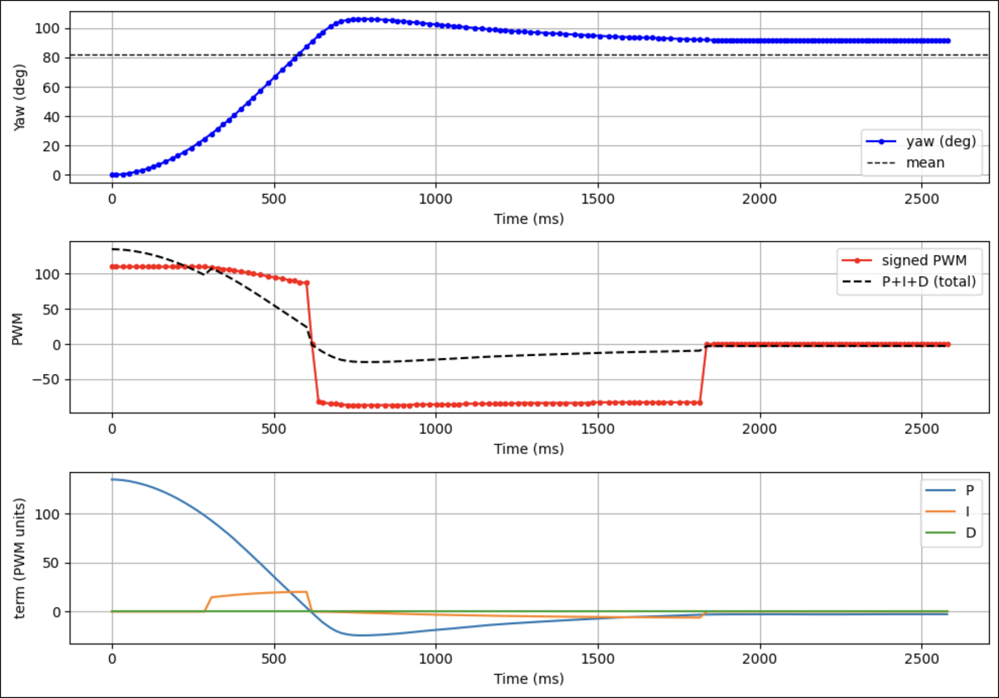

Lab 6: Yaw PID Control
Overview
This lab implements a PID controller to regulate the robot's yaw angle to a commanded setpoint using IMU feedback. A Python notebook triggers the experiment over Bluetooth, sends the controller parameters (setpoint, gains, loop period, duration, PWM limits), and subscribes to telemetry streamed back from the Artemis. The on-board controller runs a full PID loop on yaw angle, logs P/I/D terms and motor commands, and returns the data for post-processing.
The report covers Bluetooth communication, PID structure and gain selection, sampling time and timing behavior, experimental results (yaw vs time, motor commands, and controller terms), and the anti-windup strategy used to keep the controller stable even when the motors saturate.
If any media isn't working, you can view it using this link: https://github.com/cobylai/ECE5160/tree/main/assets/lab6 .
Prelab: Bluetooth Communication
The yaw PID experiment is controlled over BLE using string characteristics. On the Artemis, a BLE service exposes a receive
characteristic for commands and a transmit characteristic for telemetry. In ble_arduino.ino, the
read_data() function checks whether the RX string characteristic was written and, if so, calls
handle_command() to parse and execute the incoming command.
Commands are encoded as a type plus a payload. For yaw control, Python sends a command with numeric type 13. In
the Arduino code this is handled by the YAW_PID_START case in the command switch statement, while on the Python side
the same numeric command is named CMD.RUN_PID. Although the symbolic names differ, the shared numeric ID keeps the
protocol consistent.
// BLE_RECEIVE_AND_DISPATCH
void read_data() {
if (rx_characteristic_string.written()) {
handle_command();
}
}
void handle_command() {
robot_cmd.set_cmd_string(rx_characteristic_string.value(),
rx_characteristic_string.valueLength());
int cmd_type = -1;
bool success = robot_cmd.get_command_type(cmd_type);
if (!success) return;
switch (cmd_type) {
case YAW_PID_START: {
// parse yaw setpoint and PID parameters, then run controller
break;
}
}
}
Inside the YAW_PID_START case, the Artemis parses the payload fields containing the yaw setpoint, PID gains, run
duration, PWM limits, and loop period. It then executes a blocking PID loop that logs telemetry locally into arrays and later
streams the logs back as BLE notifications. During this blocking run, inbound commands are not processed again until the
handler returns, so live tuning within a single run is not supported in the current implementation.
// YAW_PID_COMMAND_PARSE (simplified)
case YAW_PID_START: {
int setpoint_deg = 0;
float kp = 0, ki = 0, kd = 0;
int duration_ms = 0;
int min_pwm = 0, max_pwm = 0;
int loop_period_ms = 10;
if (!robot_cmd.get_next_value(setpoint_deg)) break;
if (!robot_cmd.get_next_value(kp)) break;
robot_cmd.get_next_value(ki);
robot_cmd.get_next_value(kd);
robot_cmd.get_next_value(duration_ms);
robot_cmd.get_next_value(min_pwm);
robot_cmd.get_next_value(max_pwm);
robot_cmd.get_next_value(loop_period_ms);
// run yaw PID loop here and log telemetry
}
On the Python side, the BLE helper connects to the Artemis, subscribes to the TX characteristic for notifications, and registers
a handler that parses each telemetry string into numeric arrays. The notebook then sends the CMD.RUN_PID command
with the chosen gains and parameters, waits for the run to finish, and uses the logged data for plotting.
# PYTHON_BLE_COMMAND_AND_TELEMETRY (simplified)
ble = get_ble_controller()
ble.connect()
data_time = []
data_yaw = []
data_kp_term = []
data_ki_term = []
data_windup_term = []
data_kd_term = []
data_total_term = []
data_motor_pwm = []
def data_handler(_uuid, payload: bytearray):
s = payload.decode().strip()
parsed = parse_pid_data(s)
if parsed is None:
return
(t_s, ready, angle_deg,
kp_t, ki_t, windup_t,
kd_t, total_t, pwm) = parsed
data_time.append(t_s)
data_yaw.append(angle_deg)
data_kp_term.append(kp_t)
data_ki_term.append(ki_t)
data_windup_term.append(windup_t)
data_kd_term.append(kd_t)
data_total_term.append(total_t)
data_motor_pwm.append(pwm)
setpoint_deg = 90
kp, ki, kd = 1.5, 0.6, 0.0
duration_ms = 4000
min_pwm, max_pwm = 85, 130
payload = f"{int(setpoint_deg)}|{kp}|{ki}|{kd}|{duration_ms}|{min_pwm}|{max_pwm}"
ble.start_notify(ble.uuid["RX_STRING"], data_handler)
ble.send_command(CMD.RUN_PID, payload)PID Controller Design and Tuning
The yaw controller is implemented as a full PID controller with runtime-configurable gains. The proportional term drives the heading error toward zero, the integral term compensates for bias and friction, and the derivative term (if enabled) adds damping based on the rate of change of the error. In the final configuration for this lab, the derivative gain is kept at zero so the controller acts as a PI controller, which avoids amplifying IMU noise.
The control law uses the yaw angle estimated from the gyro as the feedback signal. The error is computed as the difference between the desired yaw setpoint (in degrees) and the filtered yaw angle. The proportional, integral, and derivative terms are combined into a total control effort that is later mapped into a signed PWM command for the motors.
// YAW_PID_CONTROLLER (simplified)
float error = yaw_setpoint_deg - used_angle_deg;
float kp_term = yaw_kp * error;
// integrate error with anti-windup (see later section)
yaw_integral_unclamped += error * dt_s;
float kd_term = yaw_kd * (error - yaw_prev_error) / dt_s;
float u_unclamped = kp_term + yaw_ki * yaw_integral_unclamped + kd_term;
float u_clamped = u_unclamped;
if (u_clamped > yaw_max_pwm) u_clamped = yaw_max_pwm;
if (u_clamped < -yaw_max_pwm) u_clamped = -yaw_max_pwm;
A typical tuned set of gains used in the lab notebook is Kp = 1.5, Ki = 0.6, and Kd = 0.0
with a yaw setpoint of about 90° and PWM limits between 85 and 130. With these values the
robot turns briskly toward the desired heading, eliminates steady-state error without excessive overshoot, and avoids the noise
sensitivity that can appear when derivative action is added on the raw yaw signal.
Range and Sampling Time
The yaw controller's timing is based on a measured loop period using microsecond timestamps. At each iteration, the code
computes dt from micros() and uses this value to integrate the gyro rate and update the yaw estimate.
The loop also enforces a nominal period using a delay, and waits for the IMU to report that new data is ready before reading
sensor values.
// YAW_LOOP_TIMING (simplified)
unsigned long now_us = micros();
float dt_s = ((float)(now_us - yaw_last_time_us)) / 1000000.0f;
if (dt_s <= 0.0f) {
dt_s = yaw_loop_period_ms / 1000.0f;
}
yaw_last_time_us = now_us;
// wait briefly for new IMU data
unsigned long wait_start = millis();
while (!myICM.dataReady() && (millis() - wait_start) < 50) {}
if (myICM.dataReady()) {
myICM.getAGMT();
float gz = myICM.gyrZ(); // deg/s
yaw_gyro_deg += gz * dt_s;
}
delay((unsigned long)yaw_loop_period_ms);
Nominally the controller is configured for a loop period on the order of 10 ms, but the effective sampling time can be
longer when the IMU is slow to provide new data or when BLE logging at the end of the run introduces overhead. In the analysis
notebook, the data_time array is used to reconstruct the actual sampling interval, which can be compared against
the desired period to understand timing jitter and its impact on controller performance.
Experimental Results: Yaw vs Time
The BLE telemetry includes the yaw angle, P/I/D terms, total control effort, and signed motor PWM command at each controller
iteration. In the combined plot below, the top panel shows θ(t) with the setpoint overlay, the middle panel shows the
signed PWM command, and the bottom panel shows the individual P/I/D contributions, which together make it easy to analyze rise
time, overshoot, settling time, and steady-state error.

In the final tuned run, the yaw angle tracks the 90° setpoint with a smooth rise and minimal overshoot. The PWM command briefly saturates near the start of the maneuver, then drops to smaller values as the robot approaches the target heading. The integral term removes residual bias due to friction, while the proportional term dominates the transient response.
5000-Level Requirement: Integrator Wind-Up Protection
Because the yaw maneuver often starts with a large heading error, the controller can easily saturate the motor command. If the integral term were allowed to accumulate error during saturation, it would grow very large and cause overshoot and long settling times once the system leaves saturation. To prevent this, the controller implements an anti-windup scheme that both gates integration and clamps the integral magnitude based on the available PWM range.
// YAW_INTEGRAL_WINDUP_PROTECTION
bool saturated_high = (u_pwm >= yaw_max_pwm);
bool saturated_low = (u_pwm <= -yaw_max_pwm);
bool pushing_high = (u_unclamped > yaw_max_pwm && error > 0.0f);
bool pushing_low = (u_unclamped < -yaw_max_pwm && error < 0.0f);
bool allow_integral = !((saturated_high && pushing_high) ||
(saturated_low && pushing_low));
if (allow_integral) {
yaw_integral = yaw_integral_unclamped;
if (yaw_ki > 0.0f) {
float i_limit = ((float)yaw_max_pwm) / yaw_ki;
if (yaw_integral > i_limit) yaw_integral = i_limit;
if (yaw_integral < -i_limit) yaw_integral = -i_limit;
}
}The telemetry also logs a dedicated windup term, which helps visualize when the anti-windup logic is active. In the plots, this term spikes when the controller hits its PWM limits and then quickly decays once the error decreases and the actuator leaves saturation, confirming that the anti-windup scheme is working as intended.